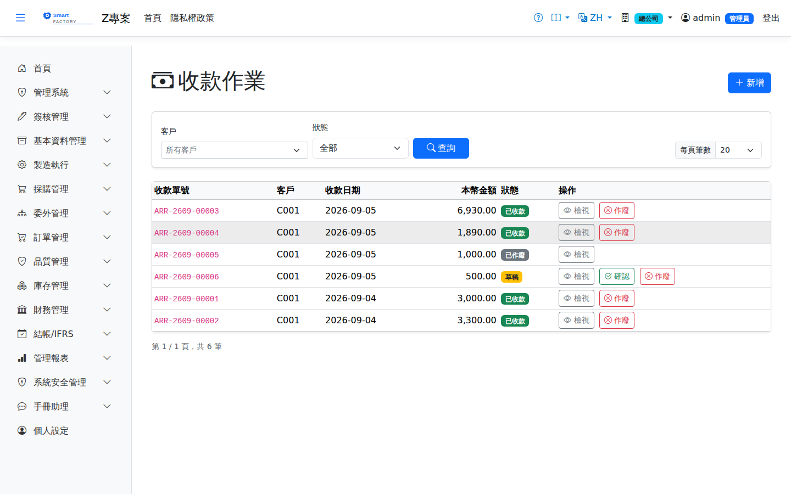
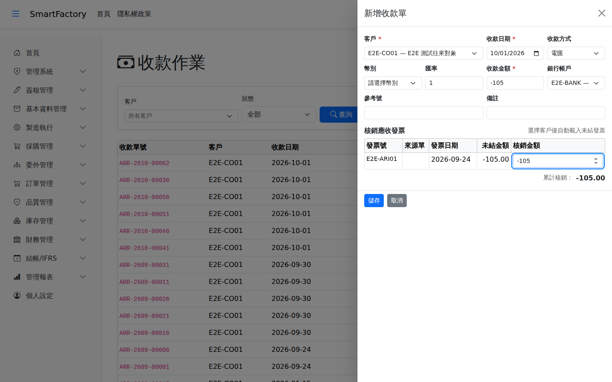

收款作業AR Receipt
登錄客戶匯款並核銷應收發票，確認後增加銀行餘額；外幣收款結算自動認列已實現匯兌損益。流程與付款作業對稱。Records money received from a customer and allocates it against AR invoices; confirming it increases the bank balance, and realised exchange gains and losses on foreign currency receipts are recognised automatically. The flow mirrors Payments.

查詢Search
作業流程Process
收款Receipt
多收款的退款與抵用Refunding or applying an overpayment
發票全額收訖之後才開銷貨折讓單（例如客戶退貨），客戶就多付了錢：這張發票的「未結金額」會是負數，在挑發票清單與應收帳齡分析都看得到。多收的錢用同一張收款單處理，對這張發票填負數的核銷金額：If a sales credit note is issued after an invoice has been received in full (for example the customer returned goods), the customer has overpaid: the invoice's "Outstanding" becomes negative, and it shows up both in the invoice list on this screen and in AR Aging. Handle the overpayment with an ordinary receipt by entering a negative allocation against that invoice:

列印Printing
清單每列的 按鈕（需有列印權限）在新分頁開啟含 QR Code 的列印單，可直接列印或另存 PDF。收款單列印含客戶名稱、付款方式、銀行帳戶、幣別與匯率、收款金額與本幣金額，並列出沖銷的發票。The button on each row of the list (print permission required) opens a printout with a QR code in a new tab, ready to print or save as PDF. The receipt printout shows the customer name, payment method, bank account, currency and exchange rate, amount and local amount, and lists the invoices it settles.
欄位說明Field reference
查詢條件Query criteria
| 條件Condition | 說明Guide |
|---|---|
| 客戶代碼Customer Code | 只看單一客戶的收款單；留空為全部Receipts for one customer only; leave blank for all |
| 狀態Status | 依收款單狀態篩選（草稿／待簽核／已確認／已作廢）Filters by receipt status (draft / pending approval / confirmed / void) |
收款單表頭Receipt header
| 欄位Field | 說明Guide |
|---|---|
| 收款單號Receipt No. | 系統採番，不可修改Numbered by the system; not editable |
| 客戶代碼Customer Code | 必填Required 付款方；選定後只帶出該客戶的未結清應收發票The payer; once chosen, only that customer's open AR invoices are listed |
| 收款日期Receipt date | 必填Required 款項實際入帳日，決定入帳期間與外幣結算匯率Date the money actually arrived, which decides the accounting period and the settlement rate for foreign currency |
| 收款方式Collection Method | 匯款、支票、現金等，由代碼維護提供Transfer, cheque, cash and so on, supplied by code maintenance |
| 狀態Status | 草稿／待簽核／已確認／已作廢；確認後才沖銷發票並增加銀行餘額Draft / pending approval / confirmed / void; the invoice is only settled and the bank balance increased once it is confirmed |
| 金額(本幣)Amount (Local) | 本次收款換算為本位幣的金額。「收款金額」會自動等於各核銷明細的合計，兩者不符的收款單存不進去；退款時為負數The receipt converted to local currency. "Receipt Amount" automatically equals the total of the allocation lines, and a receipt where the two differ cannot be saved; it is negative for a refund |
| 匯兌損益Exchange Gain/Loss | 外幣收款時，發票入帳匯率與收款日匯率的差額，結算時自動認列為已實現匯兌損益On a foreign currency receipt, the difference between the rate the invoice was booked at and the rate on the receipt date, recognised automatically as a realised exchange gain or loss on settlement |
核銷明細Allocation Details
| 欄位Field | 說明Guide |
|---|---|
| 發票號碼Invoice No | 被本次收款沖銷的應收發票；可一次選取多張。清單列出還沒收齊的發票，以及收訖後才折讓而多收的發票AR invoices settled by this receipt; several can be chosen at once. The list shows invoices not yet fully received, plus invoices overpaid because a credit note was issued after they were received |
| 未結金額Outstanding | 發票總額 − 已收 − 已折讓。負數代表客戶多付Invoice total − amount received − amount credited. A negative figure means the customer has overpaid |
| 核銷金額Alloc. Amount | 該張發票本次沖銷的金額，可小於發票餘額（部分核銷）；各行合計須等於收款金額。未結金額為負的發票填負數，用於退款或抵用Amount settled against this invoice, which may be less than the invoice balance (a partial allocation); the lines must add up to the receipt amount. Enter a negative amount against an invoice with a negative outstanding amount to refund or apply the overpayment |